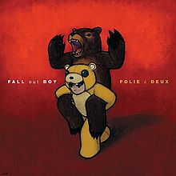

Take This To Your Grave
The band's debut album, Take This To Your Grave, was issued on May 6 2003 by Fueled by Ramen. The record produced three singles, Dead On Arrival, Saturday and Grand Theft Autumn/Where Is Your Boy, which acheived minor success. When the band was signed to Island Records, Island employed an unusual strategy that allowed the band to sign with independent label Fueled by Ramen for their debut, to later move to the major label for a second album. They toured the country with the album, including a five-day stint on Warped Tour 2004. The album was certified gold by the Recording Industry Association of America, with sales of 634,000 copies by August 2008.
From Under The Cork Tree
From Under The Cork Tree is Fall Out Boy's second studio album and was released on May 3, 2005, through Island Records as the band's major label debut. Debuting at No. 9 on the US Billboard 200 it was Fall Out Boy's breakthrough mainstream success, earning the band their first top ten album and becoming their longest charting and best-selling album. The album produced two hit singles, Dance, Dance and Sugar, We're Goin Down, which peaked at no.8 and no.9 respectively on the Billboard Hot 100.
Infinity On High
Infinity On High was released in 5 February 2007 as Fall Out Boy's third studio album. The album features collaborations with guest artists such as Babyface and Jay-Z, and sees the band experimenting with musical genres other than pop punk including R&B, soul, and flamenco. It debuted at number one on the U.S. Billboard 200, selling 260,000 copies in its first week, making it Fall Out Boy's first number one album and second top ten effort. Four of the album's fourteen songs were released as singles, of which three charted on the Billboard Hot 100, led by the lead single This Ain't a Scene, It's an Arms Race at number two, and followed by Thnks Fr Th Mmrs, The Take Over, the Break's Over and I'm Like a Lawyer with the Way I'm Always Trying to Get You Off (Me & You).
Folie à Deux

The band's fourth album, Folie à Deux (French for 'A Madness Shared by Two') was released on December 10, 2008, after the original November 4 release was postponed to avoid conflicts with the US presidential election. Fall Out Boy recruited several guest artists for Folie à Deux, as well as employing instruments and recording techniques previously unfamiliar to the group. It spawned four singles: I Don't Care, which reached number 21 on the Billboard Hot 100, America's Suitehearts, Headfirst Slide into Cooperstown on a Bad Bet and What a Catch, Donnie. It was the last studio album released before the band's 2009-2012 hiatus.
Save Rock and Roll
After the 2009-2012 hiatus the band started writing again with a desire to reinvent the band's sound in a more modern form resulting in their fifth studio album, Save Rock and Roll. It features guest vocals from Foxes, Big Sean, Courtney Love, and Elton John (who sings on the album's title track). Inspired by Daft Punk's Interstella 5555: The 5tory of the 5ecret 5tar 5ystem, music videos were filmed for every song on the album, which were eventually compiled and released as The Young Blood Chronicles in 2014. It debuted at number one on the U.S. Billboard 200, earning the band their second career number one, and its top 20 lead single, My Songs Know What You Did in the Dark (Light Em Up), has achieved triple-platinum certification in the U.S. and charted worldwide. Rolling Stone described the band's comeback as a "rather stunning renaissance".
American Beauty/American Psycho
American Beauty/American Psycho (sometimes abbreviated to AB/AP) is Fall Out Boy's sixth and latest studio album and was released on January 16, 2015 through Island Records. The band wrote music while on tour with Paramore mid-2014 and it developed into a new album. The album's release was preceded by the 3× Platinum top 10 lead single Centuries, released September 9, 2014 while the album was still being completed. The album's other singles are the title track, American Beauty/American Psycho, which received a radio premiere a month before its release in December 2014, Uma Thurman and Irresistible. AB/AP debuted at No. 1 on the US Billboard 200 album chart, selling 218,000 equivalent copies in its first week alone and becoming the band's third No. 1 album.